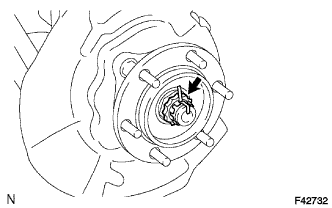
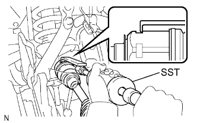

ПЕРЕДНИЙ ПРИВОДНОЙ ВАЛ В СБОРЕ > СНЯТИЕ |
| 1. СНИМИТЕ ПЕРЕДНЕЕ КОЛЕСО |
| 2. СЛЕЙТЕ МАСЛО ДЛЯ ДИФФЕРЕНЦИАЛА |
Установите автомобиль на ровной поверхности.
Снимите пробку сливного отверстия дифференциала и прокладку.
Слейте масло.
Установите новую прокладку и пробку сливного отверстия дифференциала.
| 3. СНИМИТЕ СМАЗОЧНЫЙ КОЛПАЧОК СТУПИЦЫ ПЕРЕДНЕГО КОЛЕСА |
С помощью отвертки и молотка снимите смазочный колпачок ступицы переднего колеса.
| 4. ОТВЕРНИТЕ ГАЙКУ ВАЛА ПЕРЕДНЕЙ ПОЛУОСИ |
|  |
Снимите шплинт и блокировочный колпачок.
Отверните гайку вала передней полуоси.
| 5. СНИМИТЕ ПЕРЕДНИЙ ДАТЧИК ЧАСТОТЫ ВРАЩЕНИЯ |
Выверните болт и снимите датчик частоты вращения с кулака.
| 6. ОТСОЕДИНИТЕ НАКОНЕЧНИК ЛЕВОЙ РУЛЕВОЙ ТЯГИ В СБОРЕ |
 |
Отсоедините наконечник рулевой тяги в сборе с помощью SST.
| 7. ОТСОЕДИНИТЕ КРЕПЛЕНИЕ ЛЕВОГО ПЕРЕДНЕГО НИЖНЕГО ШАРОВОГО ШАРНИРА |
 |
Выверните 2 болта и отсоедините крепление нижнего шарового шарнира от поворотного кулака.
| 8. СНИМИТЕ ЛЕВЫЙ ПЕРЕДНИЙ ПРИВОДНОЙ ВАЛ В СБОРЕ |
|  |
С помощью SST снимите передний приводной вал.